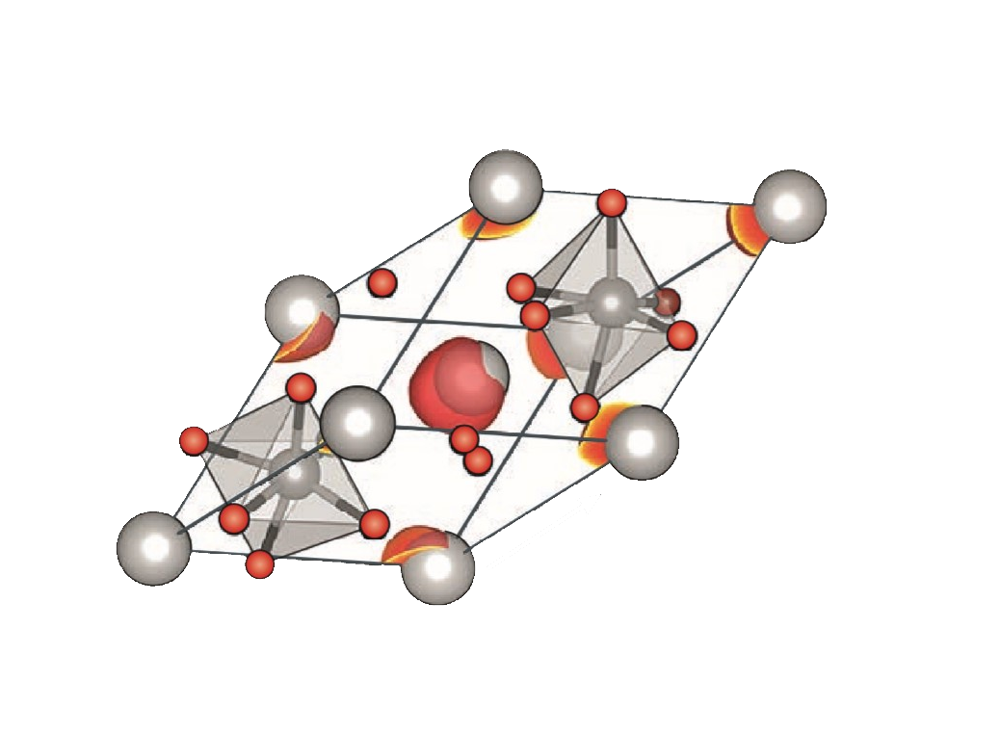

多铁材料研究之中的基本方法
随着对多铁材料研究的进一步深入，越来越多的新的实验、理论方法涌现出来。在实验手段方面，观测设备愈发先进，实验性的电子探针，可以探测电荷的自旋轨道自由度，探测的空间分辨率已经到达元胞尺度，时间分辨率已经达到次飞秒的量级，接近交换作用的时间尺度。激光脉冲沉积也有很大的进展。在理论工具方面，密度泛函理论依然解释多铁性质与预测新的多铁材料的黄金方法，在大型系统中第二性原理越来越有价值。基于分子动力学的模拟，如果模型选择合适，其结果完全可以拟合DFT计算的结果。

晶体结构